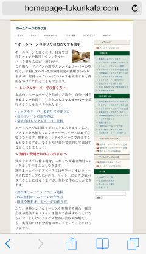
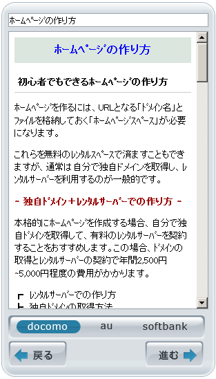

モバイル端末に最適化する方法
当サイトは2018年5月にモバイルファースト・インデックスに切り替わりましたが、それ以降、GooglebotはPC版ではなく、モバイル版のページをインデックスや検索順位のランキング要素に使用するとのことです。
このモバイルファースト・インデックスに切り替わると、PC版ページでもAMPページでも携帯ページでもなく、モバイル版のページが評価の対象になります。
- PC版 → ×
- モバイル版 → 〇
- AMP版 → ×
- ガラケー版 → ×
今までは移行しても影響のないサイトのみが対象となっていましたが、今後はWEB全体が強制的に移行される予定となっています。（※2020年9月予定。）そのため、PC版では正常に表示されているものの、モバイル版では簡略化して表示されないコンテンツがある場合、検索順位への悪影響が出てくる可能性があります。
まだホームページをモバイル端末に最適化していない場合、完全に移行する前にモバイルフレンドリーに対応しておくとよいでしょう。
最適化すべきモバイル端末の種類
このモバイル端末には、大きく分けて以下の３種類があります。
（１）スマートフォン（※iPhone、Pixelなど）→ 電話＋小型パソコン
（２）タブレット端末（※iPadなど）→ 小型パソコン
（３）フィーチャー・フォン端末（※ガラケー、ガラパゴス携帯）→ 電話
このうち、「スマートフォン」と「タブレット端末」はフルブラウザ搭載のため、本質的には画面が小さい小型パソコンの扱いとなります。そのため、PCと同じようにホームページを閲覧することができます。また、Googleではデザイン上、タブレット端末もスマートフォンの分類に含んでいるとのことです。
例えば、こちらはスマホで当ホームページのPC版のページを閲覧したものですが、正常に閲覧はできるものの、最適化していな場合は文字が小さく表示されます。
■（１）PC版をスマートフォンで閲覧した場合

→ 文字が小さすぎて読めない！
この状態では文字が小さくて読みにくいため、モバイルフレンドリーテストを実行するとNGが表示されてしまいます。
→ モバイル フレンドリー テスト - Google Search Console
このようなスマホに最適化されていないサイトは、モバイルフレンドリーではないことが原因で検索順位が下落してしまう可能性があります。
そのため、モバイル版のページを用意してスマホに最適化する必要があります。
■最適化されたモバイル版のページ

ただし、このモバイルフレンドリーに合格しても安心してはいけません。
モバイル版のページを「m.example.com」のような形で別途に作成し、コンテンツを簡略化している場合には注意が必要です。
例えば、無料ブログサービスなどではスマホでアクセスした際、見出しのみで簡略化された形で表示されることが多いです。この場合、モバイルフレンドリーではありますが、コンテンツが簡略化されてしまいます。
→ PC版と比べて情報量が少ない
このような場合、以前までは情報量の多いPC版の方でインデックスされていましたが、モバイルファーストインデックスへの完全移行により、そのような配慮はされなくなり、文字数の少ないモバイル版の方で評価されるようになります。その結果としてコンテンツ不足によりインデックスされにくくなり、アクセス数が減少してしまう可能性があります。
当サイトの場合、モバイル版のページを別途には作成しておらず、PC版のページをそのまま使い、レスポンシブウェブデザインにてCSSのみで表示を最適化しているため、情報量については何も変わらず、特に影響はありませんでした。
モバイル端末に最適化する場合、レスポンシブウェブデザインで対応するのが一般的ですが、もし無料レンタルサービスの仕様で対応できない場合、独自ドメインを取得してレンタルサーバーに引っ越しされることをおすすめします。
■（２）タブレット端末で閲覧した場合
また、タブレット端末についても同様ですが、こちらもレスポンシブウェブデザインなどで表示を最適化しておく必要があります。
■（３）フィーチャー・フォン端末で閲覧した場合
一方、フィーチャーフォン端末（※ガラケー）はフルブラウザには対応していないため、ガラケーでPCサイトに直接アクセスしても正常には表示されません。そのため、PC用のサイトとは別にページを用意して情報量を縮小した形でのHTMLファイルを作成する必要があります。

ただし、最近ではガラケーの生産自体が終了しており、大手サイトでもほぼフィーチャー・フォン端末へのサポートを終了しています。また、フィーチャーフォン用のGooglebot自体が廃止されているため、モバイルファースト・インデックスにも関係はありません。
そのため、当サイトではガラケー端末には対応していませんが、ガラケーユーザーのためにも引き続きホームページを最適化しておくのは大切なことだと思います。
いずれにしても、最低限、スマートフォンとタブレット端末には最適化しておくとよいでしょう。
スマホとタブレット端末に最適化する方法
スマートフォンとタブレット端末はフルブラウザ搭載とはいえ、デフォルトの状態では上記のように画面サイズに合わせて縮小して表示されるため、文字が小さくなって表示されます。
そのため、スマホやタブレット端末で閲覧した際にも適切に表示されるよう、サイト運営者側がホームページを最適化しておく必要があります。
最適化する際は、以下の点に注意しておくとよいでしょう。
■レスポンシブウェブデザイン
具体的な方法としては、PC用とまったく同じURLを使用し、閲覧する端末の大きさによって適用するスタイルシートを切り分けるレスポンシブウェブデザインが一般的です。
スマホの場合はワンカラムのケースがほとんどですが、タブレット端末についてはPC用のレイアウトをそのまま使用するケースもあります。
また、文字の大きさやリンクをタップしやすいものにするなど、モバイル端末での閲覧時にも適切に表示されるように最適化することをおすすめします。
■AMPページへの対応
スマホについては、AMPページにも対応してランディングページを高速で表示させることをおすすめします。こちらは主にスマートフォンのモバイル検索用になりますが、検索結果で自サイトのURLがクリックされた際にキャッシュで高速に表示されるため、検索経由のアクセスが多い場合はメリットがあります。
ただし、AMPページ自体は正規ページではないため、モバイルファースト・インデックスは正規化したPC版ページのモバイル版の方が対象になります。
つまり、「PC版とAMPページのみ」の場合、PC版の方がランキング要素として使用されるため、まずはPC版のページをレスポンシブウェブデザインでモバイル版に対応し、モバイルファースト・インデックスに対応した上で、別途にAMPページを作成するとよいでしょう。
■構造化データ化
構造化データも設定することにより、モバイル検索の検索結果ではリッチリザルトで表示されるようになります。その際、モバイル版だけではなく、AMPページも作成しておいた方が利用できる機能の幅が広がるため、上記のAMPにも対応しておくとよいでしょう。
■SNSへの最適化
加えて、TwitterなどのSNSで画像が適切に表示されるよう、OGPのメタタグを設置して最適化しておすすめします。
■画像とCSSの軽量化
さらに画像の容量を削減したり、CSSのMinify化で容量を圧縮することにより、モバイルでの低速な通信環境でも快適に表示されるようにすることをおすすめします。
軽量化が完了したら、こちらでサイトの速度をチェックするとよいでしょう。
→ モバイルサイトの速度を比較しましょう - Think with Google
■URLの正規化
モバイルファーストインデックスによって評価の対象となるのは「モバイル版」へ変更になるため、正規化の<link rel="canonical"タグについてもモバイル版に変更すべきかといえば、その必要はありません。そのままPC版に正規化しておくことになります。
No changes are necessary for interlinking with separate mobile URLs (m.-dot sites). For sites using separate mobile URLs, keep the existing link rel=canonical and link rel=alternate elements between these versions.
（※参照：Google 検索セントラル ブログ）
フィーチャーフォン端末への最適化
フィーチャーフォン端末のガラケーについては、ヤフーなどの大手サイトは既にサービスを終了しています。また、Googleなどの検索エンジンでもページの存在は確認するものの、クロールやインデックスはされないものと思われます。
そのため、当サイトでは対応していませんし、あえて対応する意味はないのかなという気もします。
ただ、ニュースサイトなどではまだ対応しているケースもあります。

アクセス数はほとんど発生しないとは思いますが、対応したい人はしておいても損はないかもしれません。
このガラケー（フィーチャーフォン）携帯への最適化の具体的な方法につきましては、こちらのページをご参照ください。
→ 携帯サイトの作り方（ガラケーサイト）
ガラケーサイトにつきましては、正規ページに以下のように記載することで携帯ページの存在を通知することができます。
<link rel="alternate" media="handheld" href="携帯ページのURL">
また、AMPページについても、正規ページには以下のように記載してAMPページの存在を通知することができます。
<link rel="amphtml" href="アンプページのURL">
一方、モバイル版のページには<link rel="canonical"タグを記載してURLを正規化します。
そのため、携帯ページとAMPは似ているところがあります。
この携帯ページにまで対応する場合、ひとつのコンテンツにて「PC版」と「モバイル版」、「AMPページ」、「携帯ページ」の４種類を作成する必要が出てくるため、携帯ページについては余裕がある場合に対応されるとよいでしょう。